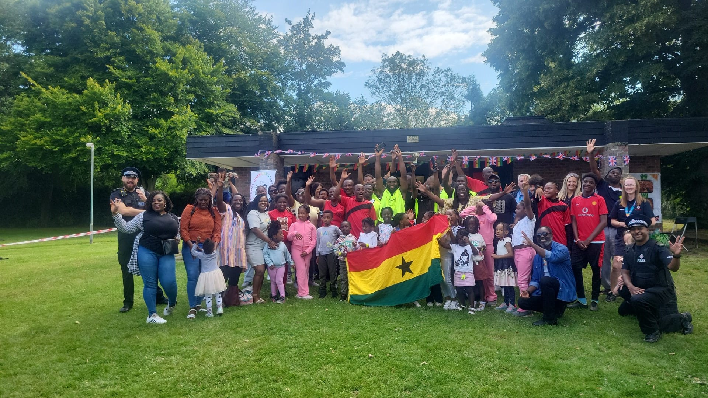

Welcome
The MEDWAY GHANAIAN ASSOCIATION is a non-political, non-profitable, non-denominational union for Ghanaians living in Medway, UK.
Our Aims
- Promote health and wellbeing among Ghanaians living in Medway.
- Establish a social network of Ghanaians where we entertain, educate, and inform — including updates on government policies.
- Signpost and enable access for public and private sector organisations to engage meaningfully with the Ghanaian community in Medway.
